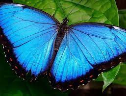

Kupu-kupu

Kupu-kupu atau rama-rama merupakan serangga yang tergolong ke dalam ordo Lepidoptera, atau 'serangga bersayap sisik' (lepis, sisik dan pteron, sayap).
Secara sederhana, kupu-kupu dibedakan dari ngengat alias kupu-kupu malam berdasarkan waktu aktifnya dan ciri-ciri fisiknya. Kupu-kupu umumnya aktif waktu siang (diurnal), sedangkan ngengat kebanyakan aktif waktu malam (nokturnal). Kupu-kupu beristirahat atau hinggap dengan menegakkan sayapnya, ngengat hinggap dengan membentangkan sayapnya. Kupu-kupu biasanya memiliki warna yang indah cemerlang, ngengat cenderung gelap, kusam atau kelabu. Meski demikian, perbedaan-perbedaan ini selalu ada perkecualiannya, sehingga secara ilmiah tidak dapat dijadikan pegangan yang pasti. (Van Mastrigt dan Rosariyanto, 2005).Kupu-kupu dan ngengat amat banyak jenisnya, di Pulau Jawa dan Pulau Bali saja tercatat lebih dari 600 spesies kupu-kupu. Jenis ngengatnya sejauh ini belum pernah dibuatkan daftar lengkapnya, akan tetapi diduga ada ratusan jenis (Whitten dkk., 1999). Kupu-kupu pun menjadi salah satu dari sedikit jenis serangga yang tidak berbahaya bagi manusia.
Siklus Hidup
Banyak yang percaya bahwa kupu-kupu memiliki umur yang sangat singkat. Sebenarnya, kupu-kupu dewasa mampu hidup selama seminggu maupun hampir setahun tergantung pada spesiesnya. Kebanyakan spesies melalui tingkat larva yang agak lama, dan ada yang mampu menjadi dorman ketika dalam tingkat pupa atau telur agar dapat mengarungi musim dingin.[1]
Kupu-kupu bisa bertelur sekali atau banyak kali setiap tahun. Jumlah keturunan setahun berbeda pada pengaruh iklim, yang mana kupu-kupu yang tinggal di daerah tropis mampu bertelur lebih dari sekali dalam setahun.[2]
Telur
Telur kupu-kupu dilindungi oleh kulit berabung keras yang disebut khorion ditutupi dengan lapisan antililin yang melindungi telur dari terjemur sebelum larva sempat berkembang sepenuhnya.[3], Setiap telur memiliki pori-pori berbentuk corong yang halus di satu ujungnya, yaitu mikropil [3] yang bertujuan memungkinkan masuknya sperma untuk bergabung dengan sel telur. Lain spesies lain ukuran telurnya, namun semua telur kupu-kupu berbentuk bola maupun ovat.